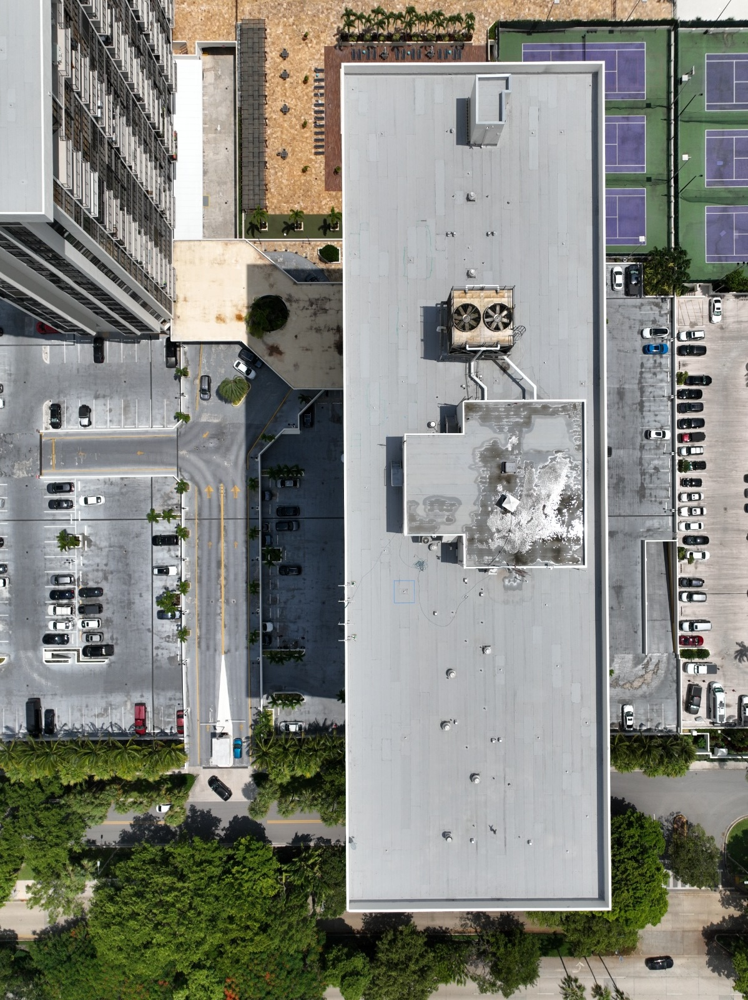
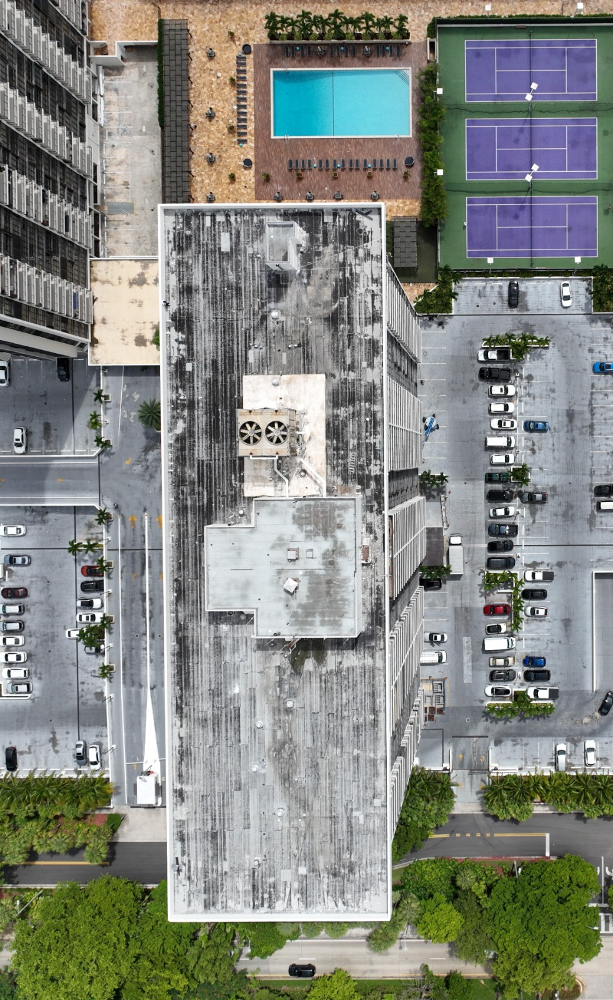

Una reconstrucción multimillonaria de los techos de ambas torres entregó mejor protección, menores costos de seguro y confiabilidad estructural a largo plazo.
Los sistemas de techo existentes en ambas torres habían alcanzado el final de su vida útil, creando riesgos continuos de fugas, cargas de mantenimiento y exposición de seguro. Años de reemplazo diferido habían dejado el edificio vulnerable a eventos climáticos y costos de reparación crecientes.
Reemplazo completo del sistema: Ambos techos de torres fueron completamente reconstruidos con materiales modernos y estándares de instalación, eliminando puntos de fuga heredados y vulnerabilidades estructurales.
Estrategia de financiamiento combinado: El proyecto se financió con una combinación de reservas, ingresos de cuota extraordinaria y una porción del pago de seguro de IRMA, demostrando uso estratégico de las fuentes de capital disponibles.
Reducción de costos de seguro: Los sistemas de techo mejorados contribuyeron a primas de seguro mediblemente más bajas para el ciclo de póliza 2025-2026, proporcionando alivio financiero continuo a los propietarios.
Ejecución con mínima interrupción: El trabajo se completó mientras los residentes permanecieron en ocupación, con programación por fases para limitar impactos de ruido y acceso.
Arrastre la línea central para comparar la condición del techo antes del reemplazo y después de la instalación del nuevo sistema.


El reemplazo del techo está operativamente completo. La inspección final y el cierre del contratista están pendientes para cerrar el permiso y formalizar el cierre del proyecto.
El reemplazo de techos es uno de los proyectos de capital de mayor costo e impacto que puede ejecutar un condominio. Completar este trabajo en 2025 eliminó una exposición importante de riesgo, mejoró la protección ante futuros eventos climáticos y entregó ahorros inmediatos en seguros. El enfoque de financiamiento combinado también demostró planificación de capital disciplinada al aprovechar múltiples fuentes en lugar de imponer una carga innecesaria de cuota extraordinaria.
Este proyecto representa el tipo de administración a largo plazo que protege los valores de propiedad y reduce el gasto futuro de emergencia.